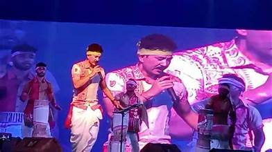

Welcome to Assam's Fairs and Festivals
ü™î Fairs and Festivals of Assam ‚Äì A Celebration of Culture and Tradition üéâ
üïâÔ∏è Religious Festivals ‚Äì Spiritual Grandeur

Bihu – The most celebrated festival of Assam, marking the Assamese New Year with music, dance, and feasting.
Ambubachi Mela – A spiritual festival at the Kamakhya Temple, attracting thousands of devotees every year.
Durga Puja – Celebrated with grandeur, worshipping Goddess Durga through elaborate rituals and processions.
üåæ Harvest and Agricultural Festivals ‚Äì Embracing Nature‚Äôs Bounty
Kati Bihu – A festival celebrated during autumn, expressing gratitude to deities for a good harvest.


Rongali Bihu – Celebrated in April, marking the Assamese New Year with traditional dance and vibrant festivities.
Magh Bihu – A winter harvest festival where communities gather for feasting and bonfires.
üé≠ Cultural and Folk Festivals ‚Äì Embracing Assam‚Äôs Heritage
Majuli Raas – A cultural extravaganza celebrated on the river island Majuli, showcasing traditional art forms.
Ali-Aye-Ligang – A Mishing tribe festival that celebrates sowing season with community feasts and rituals.
Dehing Patkai Festival – Celebrating the rich biodiversity and culture of the Patkai region.
üïäÔ∏è Tribal and Folk Fairs ‚Äì Preserving Ancient Legacies
Jonbeel Mela – A barter fair where communities exchange goods, reflecting ancient traditions of harmony.
Bordoisila – Celebrating the arrival of the pre-monsoon winds with music, dance, and colorful traditions.

üõï Temple Festivals ‚Äì Echoes of Faith
Kamakhya Temple Festival – Honoring the divine feminine with grandeur and spiritual fervor.
Dol Jatra – Assam’s version of Holi, where devotees celebrate Lord Krishna with colors and joy.